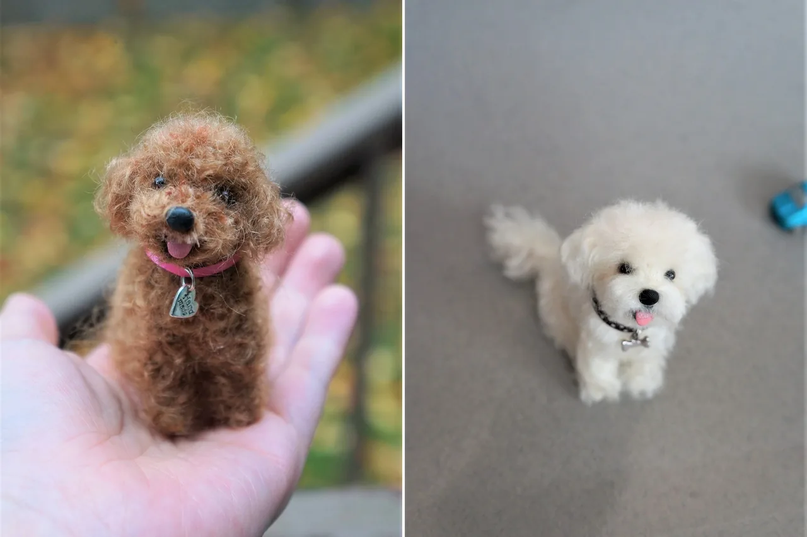
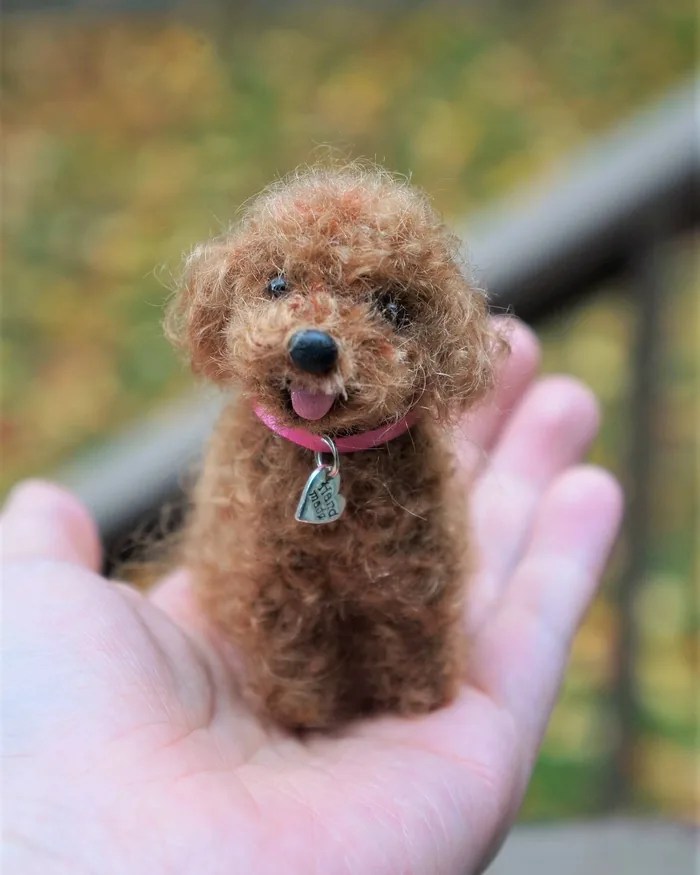
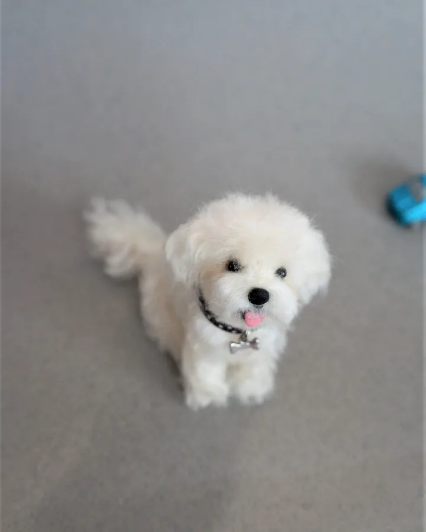
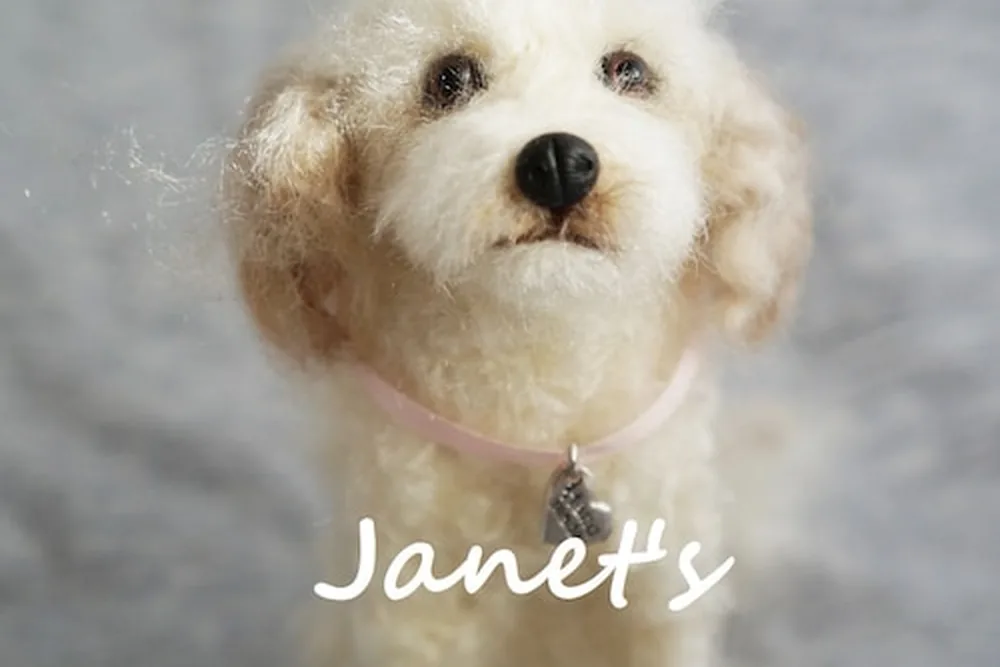
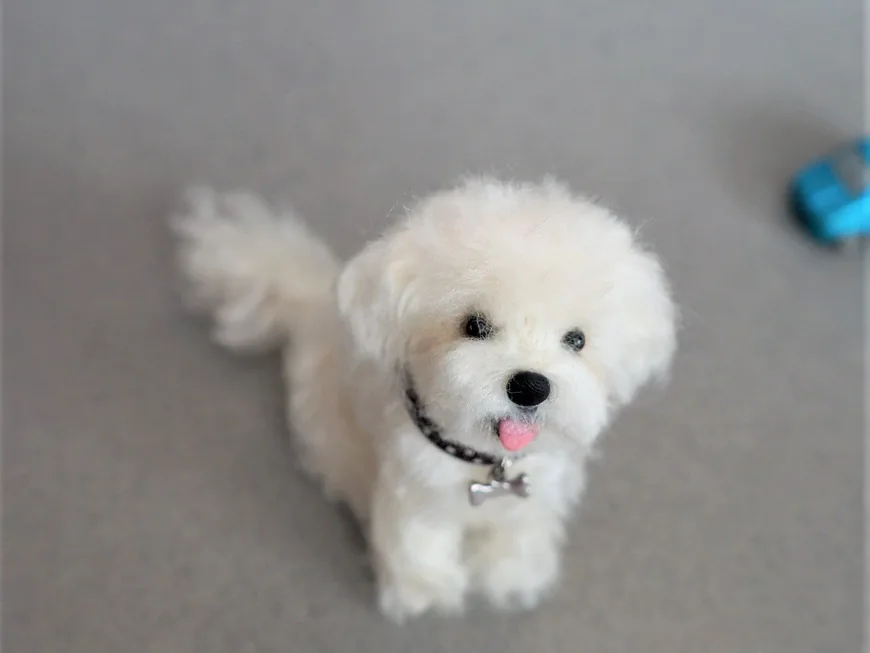
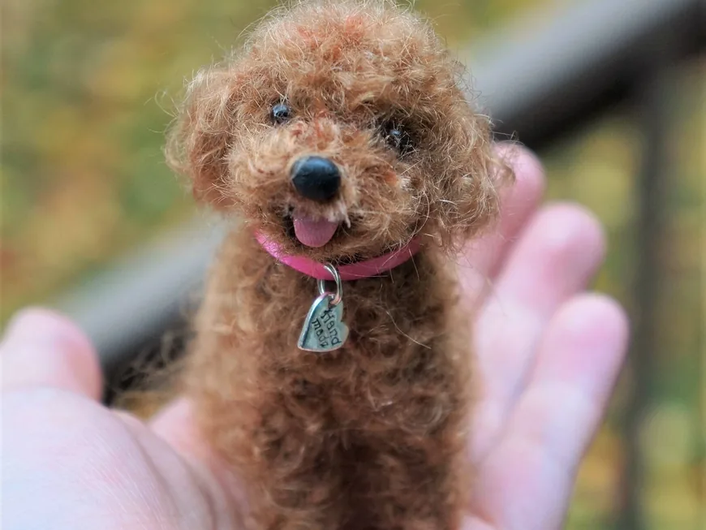
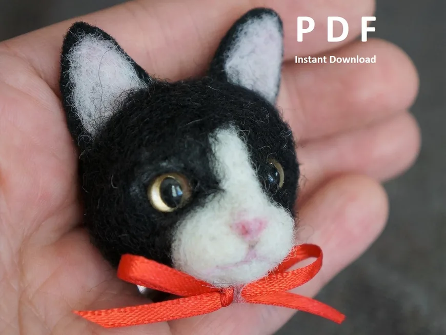
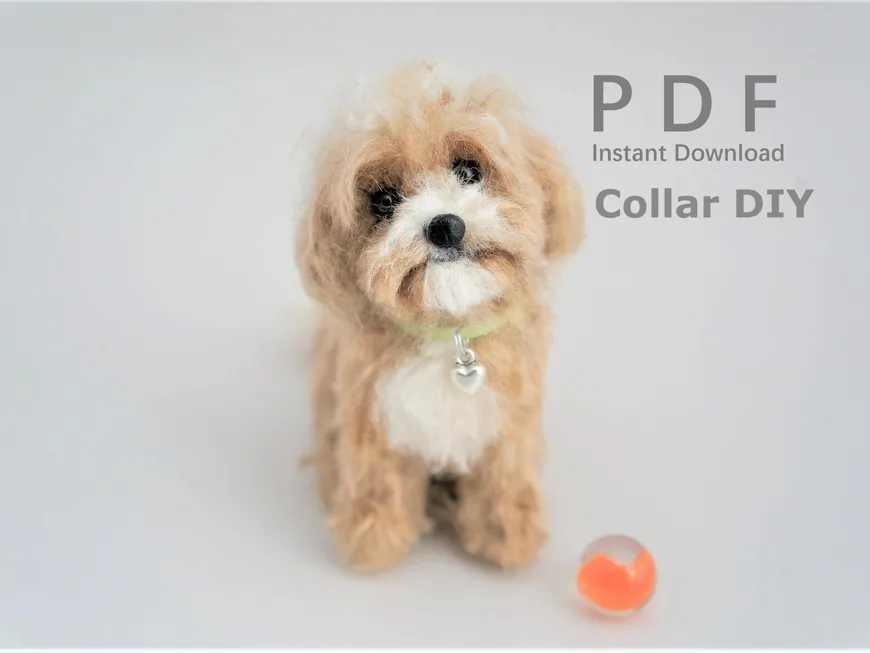

Handmade
Every animal is made by Janet.

Needle felted animals · Seattle, Washington
All about dogs, cats and cute animals

Meet the Artist
Owner & artist of Janet's Needle Felting
Hi, I’m Janet! All animals are handmade by me. I hope my mini versions bring joy and fond memories to people’s minds.
All animals handmade by me. Seattle resident. ☔
Our story

01 How it started
A few years ago I accidentally stumbled across a TV show introducing needle felting, and I have been in love with this craft ever since. Seattle’s rainy weather gives me lots of indoor craft time.
I have always enjoyed arts and crafts. My sketching and sewing experience helps me construct lifelike mini animals, and the most important part is an adorable face expression.
My felted animals have been featured on the Etsy Style Blog, Tumblr Editor’s Choice and Equestrian Living Magazine.
— Janet
02 Where & how it’s made
Each animal takes inspiration and about 10,000 to 40,000 needle stabs to complete. Felted miniatures are about 3 to 5 inches tall.

03 What makes it special
Every animal is made by Janet.
Her specialty is long and curly-haired dogs.
PDF tutorials for felters.
Reviews
What we make
Felted dogs and pets, pet portrait sculptures, portrait magnets and PDF tutorials. Here is what you will find in the shop.

Lifelike needle felted dogs, with a specialty in long and curly-haired breeds.

Miniatures about 3 to 5 inches tall, each taking 10,000 to 40,000 needle stabs.

Felted cat and dog portrait heads with little bows.

Learn to felt collars, leashes, noses and tongues with step-by-step PDF tutorials.
Everything is sold through the online shop, with secure checkout and buyer protection.
Stay in the loop
Sign up to be the first to know about sales and new products.
You’re in! 🎉
Continue to the shopEvery animal is handmade by Janet in Seattle. Follow along on Instagram for new felted friends!
Visit the shopFind me elsewhere